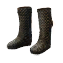

Открыть в интерактивной вики →
| Требуемый уровень | 60 |
|---|---|
| Редкость | Синергетик |
| Улучшения | осколки |
| Тип | Сапоги |
| Цена | 400 000 |
| Ремонт | 160к |
| Требуемая мощь | 45 |
| Требуемое знание | 45 |
| Мощь | 7 |
| Знание | 16 |
| Здоровье | 83 |
| Мана | 68 |
| Сопр. рубящим | 30 |
| Сопр. дробящим | 24 |
| Сопр. колющим | 30 |
Дроп
Боссы и Чемпионы